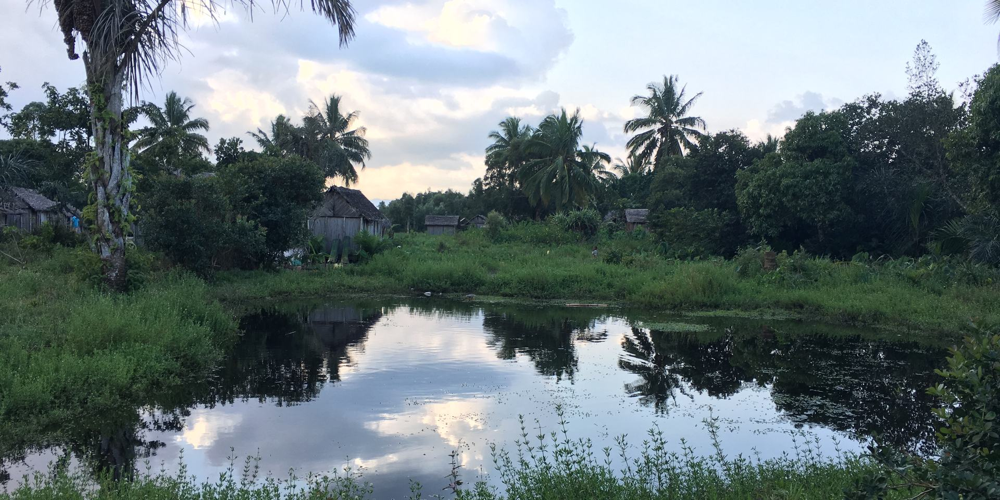

Research
Seeds, ranges and the traces they leave
Three questions run through my work: where seeds travel, where species vanish first, and what genomes still remember of both.
I work at the intersection of evolutionary ecology, population genomics and conservation science, combining genomic data, spatial analyses and fieldwork to understand how biodiversity is distributed and how it changes — across landscapes, and across both deep and very recent time.
Main research lines

Biodiversity patterns & evolution
How interactions, ecological strategies and environmental history shape biodiversity.

Genetic diversity & population change
How populations change through space and time, from demographic history to contemporary decline.

Biodiversity change & conservation
Understanding biodiversity loss and improving the data and tools we use to conserve it.
Methods & tools
Spatial and comparative analysis. Species distribution models and ensembles, variation partitioning, linear mixed-effects models, trait and genetic data imputation, GIS.
Lab and field. DNA extraction, PCR and real-time PCR, gel electrophoresis, microsatellites; planning and leading fieldwork, collecting herbarium specimens, identifying plants in the field.
Computing. R and Unix (bash) on high-performance computing clusters, some Python, and a lot of care put into figures and maps.
Published with GitHub Pages